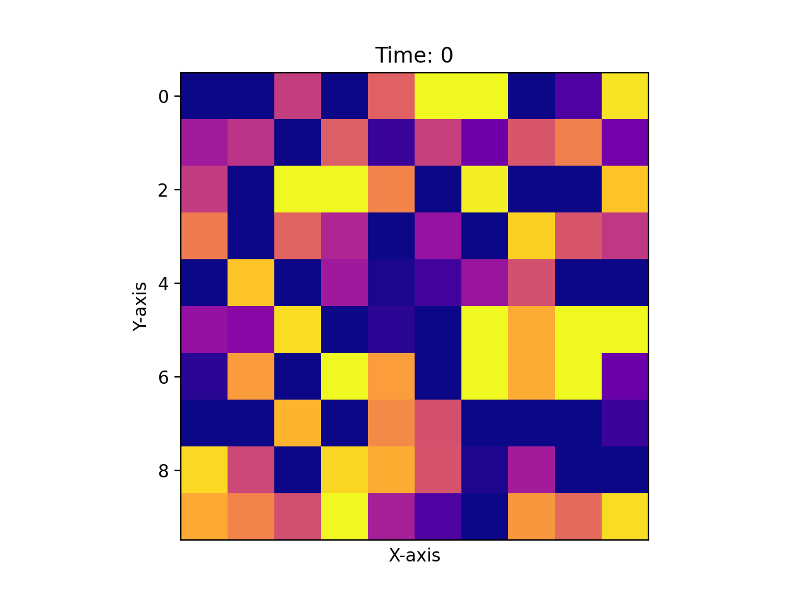
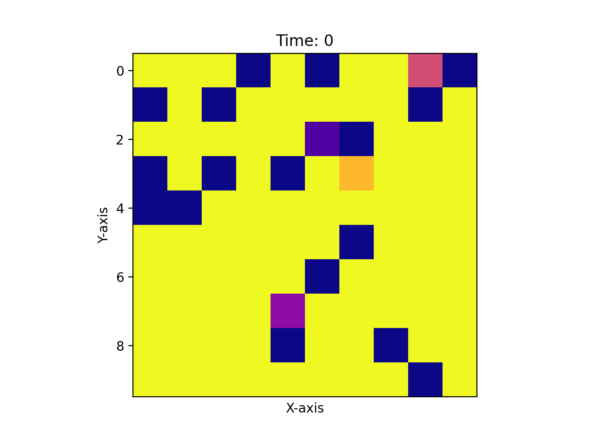
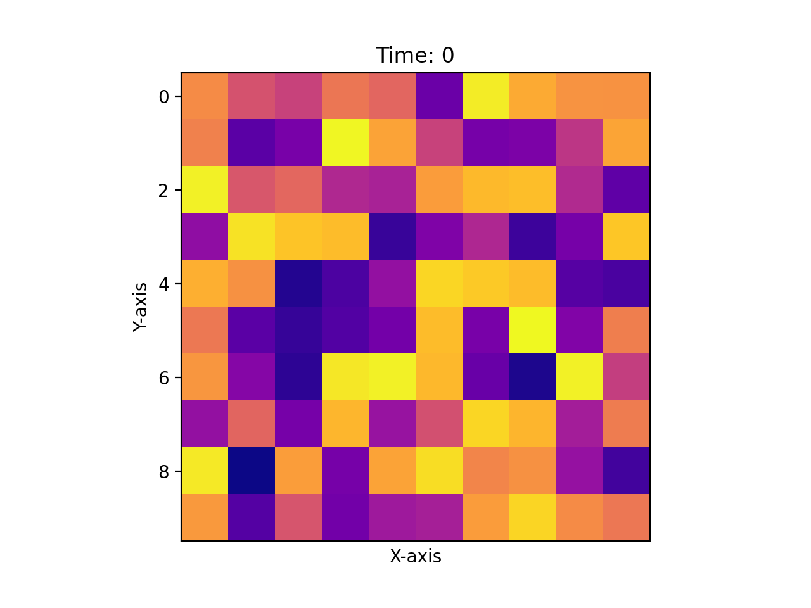

Overview
cmlattice provides a python implementation of various types of coupled map lattices. A coupled map lattice, or CML, is a dynamic system that models the behavior of nonlinear systems.
This package contains several different models, all of which can be broadly described as cmls:
- A standard CML with logistic state function,
- The CML model primarily studied by Kaneko1,
- The Rulkov Map2
A Standard CML

A Coupled Kaneko Lattice

An Uncoupled Rulkov Lattice

Chaos
These models are particularly useful in studying choatic, dynamic systems. For example, in one dimension choosing an r parameter of greater than 3.57 for a standard lattice will behave choatically.
Citations
-
Kunihiko Kaneko, Period-Doubling of Kink-Antikink Patterns, Quasiperiodicity in Antiferro-Like Structures and Spatial Intermittency in Coupled Logistic Lattice: Towards a Prelude of a “Field Theory of Chaos”, Progress of Theoretical Physics, Volume 72, Issue 3, September 1984, Pages 480–486, https://doi.org/10.1143/PTP.72.480 ↩
-
N.F. Rulkov (2001). "Regularization of Synchronized Chaotic Bursts". Physical Review Letters. 86 (1): 183–186. arXiv:nlin/0011028. Bibcode:2001PhRvL..86..183R. doi:10.1103/physrevlett.86.183. PMID 11136124. S2CID 7016788 ↩